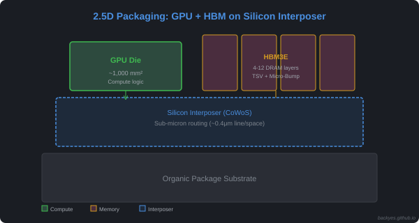
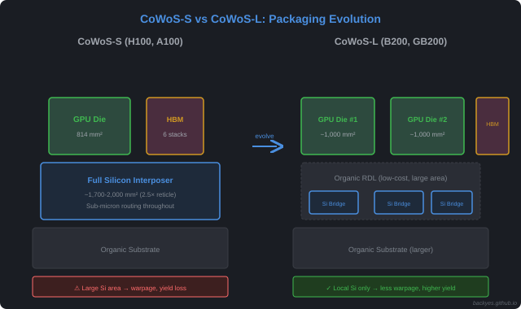
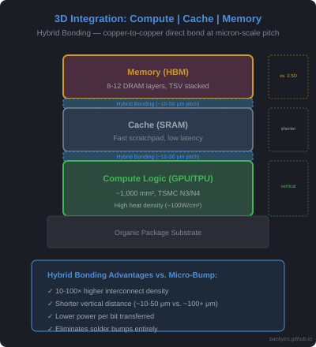
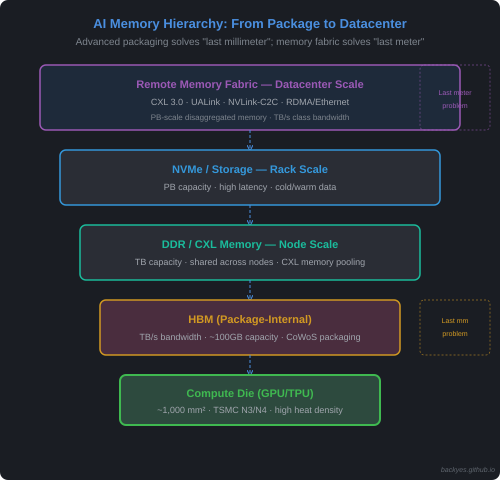

Study notes · Written July 2026
One-Sentence Thesis
AI GPU scaling no longer relies on process shrink alone — it advances along four parallel dimensions: Logic, Memory, Packaging, and Interconnect. This post zooms in on packaging, the dimension that has moved from backstage to center stage.
0. The Four Dimensions of AI GPU Scaling
Before diving into packaging, let's establish the full picture. Modern AI GPU performance scaling comes from four parallel axes, not a single "process → packaging" replacement:
| Dimension | What It Solves | Key Technology | Scaling Status |
|---|---|---|---|
| Logic Scaling | Compute density per mm² | 3nm → 2nm → 1.4nm | Slowing — diminishing returns below 3nm |
| Memory Scaling | Memory bandwidth per GPU | HBM2 → HBM3 → HBM3E → HBM4 | Active — bandwidth still doubling every gen |
| Packaging Scaling | Interconnect density between dies | FCBGA → CoWoS-S → CoWoS-L → CoPoS | Most aggressive scaling vector today |
| Interconnect Scaling | Multi-GPU system bandwidth | NVLink 4 → 5 → 6, InfiniBand → NDR/XDR | Critical for training clusters |
Key insight: These four dimensions are complementary, not substitutive. Advanced packaging does not replace Moore's Law; it extends system scaling when logic scaling alone can no longer satisfy bandwidth and integration requirements. Packaging is the enabling layer that lets the other three dimensions scale together.
This post focuses on Packaging Scaling — the dimension undergoing the most dramatic transformation and the one least understood outside the manufacturing world.
1. Why Did Packaging Suddenly Become So Important?
Let's build some intuition first.
A single NVIDIA Blackwell B200 package houses 2 compute dies (~750-800 mm² each) + 8 HBM3E memory stacks. Its CoWoS-L silicon interposer spans approximately 2,800 mm² (about 3.3× the photolithography reticle limit), while the underlying organic package substrate approaches 10,000 mm² (~10×10 cm). For comparison, the H100's monolithic compute die is 814 mm², its CoWoS-S interposer ~1,700–2,000 mm², and its package substrate ~3,025 mm² (55×55 mm).
Meanwhile, TSMC's N3E process delivers about $60%$ transistor density improvement over its baseline N5 (N4 being a minor optimization of N5 with negligible density gain). Three generations of process evolution (N5→N4→N3→N3E) accumulate only a ~1.6× density uplift — far below the historical Moore's Law trajectory. But the real issue isn't that transistors aren't improving; it's that compute capability is growing faster than data supply capability — the classic Memory Wall.
The real problem: not "transistors aren't enough" but "compute grows faster than data supply." Advanced packaging doesn't replace Moore's Law; it addresses the Memory Wall by bringing data closer to compute.
2. Technical Ideas: Chiplet + High-Density Interconnect
AI chip packaging technology can be decomposed into two dimensions:
2.1 Stacking More Compute and Memory via Area and Interconnect
a) Compute die stacking — Chiplet Architecture
The classic explanation for Chiplet adoption is die yield: under defect density and parametric variation constraints, large-area monolithic die manufacturing risk increases rapidly, making Chiplet the better yield economics choice. This is true — but yield is only one of four structural forces driving Chiplet architecture:
| Factor | Problem | Chiplet Solution |
|---|---|---|
| Reticle Limit | Maximum lithography exposure ~800 mm²; future AI accelerators need 1,500–2,000 mm² compute die | Split into multiple smaller dies within reticle bounds |
| Process Heterogeneity | Not all modules need leading-edge nodes — compute die wants N3/N4, IO/cache benefit from mature nodes | Each chiplet on its optimal process, then integrated via packaging |
| Design Reuse | Building every GPU tier from scratch is prohibitively expensive | Reuse compute/IO chiplets across product lines, amortizing R&D |
| System Architecture Evolution | Future AI systems aren't "one GPU + HBM" — they're compute + HBM + cache + network + memory expansion | Chiplet is the architectural paradigm enabling heterogeneous integration |
Key insight: Chiplet is not just a manufacturing workaround for yield — it's the system architecture paradigm for next-gen AI accelerators. Yield is the entry ticket; reticle limits, process heterogeneity, and modular system design are the deeper structural drivers.
AMD's Zen series pioneered this route; NVIDIA fully embraced it in the Blackwell era: the B200 consists of 2 compute dies connected via NV-HBI (NV-High Bandwidth Interface) with ~10 TB/s class die-to-die bandwidth (exact figure depends on bidirectional aggregation definition) — over 5× the system-level NVLink 5 bandwidth (~1.8 TB/s per GPU). This massive on-package interconnect is what makes the two dies behave as one logical monolithic die from software's perspective.
b) Memory die stacking — HBM
Parallel to compute dies is the 3D stacking of memory. HBM (High Bandwidth Memory) vertically stacks 8-12 DRAM dies, connected through TSVs (Through-Silicon Vias) and Micro-Bumps. A single HBM3E stack delivers 24GB capacity and 1.2 TB/s bandwidth; a GPU paired with 6-8 HBM stacks breaks through 5 TB/s total memory bandwidth.

Figure: 2.5D Packaging — GPU die + HBM stacks side-by-side on silicon interposer.backyes.github.io
2.2 How Do Compute Dies and HBM Interconnect at High Speed?
This is the core challenge of packaging technology.
A single HBM3E has over 1,000 to 2,000 signal pins on its bottom (HBM3 uses a 1024-bit interface per stack). The routing density between 8 HBM stacks + 2 compute dies far exceeds the capability of traditional packaging substrates. How is this solved?
Why HBM Must Sit Next to GPU — The Real Reason
It's intuitive to think "HBM is close to GPU because shorter traces = lower latency." That's partially true, but not the fundamental constraint. The real reason is routing impossibility:
- A single HBM3 stack needs 1,024 high-speed signal traces just for the data interface — plus hundreds more for power, ground, and control
- 8 HBM stacks + 2 compute dies = 10,000+ high-speed traces must be routed in the package
- Traditional organic substrate line/space: ~10-15 μm — physically impossible to route 10,000 traces at the required density
This is the Silicon Interconnect Density Problem: conventional substrates lack the routing capability, regardless of distance. CoWoS solves this by bringing silicon-level routing density into the package:
| Substrate Type | Line/Space Capability | Can Route HBM? |
|---|---|---|
| Traditional PCB | ~50–100 μm | ❌ Impossible |
| Organic Substrate (FCBGA) | ~10-15 μm | ❌ Impossible at HBM density |
| Silicon Interposer (CoWoS) | ~0.4 μm (sub-micron) ❸ | ✅ Routable |
Key insight: CoWoS's core value isn't "making traces shorter" — it's importing silicon-level routing capability into the packaging world. The interposer acts as a "silicon PCB," solving the density problem that organic substrates physically cannot.
The evolution of three generations of packaging substrates is an arms race in "interconnect density":
| Generation | Technology | Routing Method | Applied Products | Key Limitations |
|---|---|---|---|---|
| 1st Gen | FCBGA (Flip-Chip Ball Grid Array) | Direct routing on organic substrate | RTX 30/40 series (GDDR6X), early AI cards | Line/space ~10-15μm, limited routing density, cannot support HBM high-density interconnect |
| 2nd Gen | CoWoS-S (Chip-on-Wafer-on-Substrate) | Introduces Silicon Interposer, sub-micron routing on silicon wafer | A100, H100, AMD MI250/MI300 | Interposer size limited by reticle size (~2.5× reticle), large-area manufacturing suffers warpage and low yield |
| 3rd Gen | CoWoS-L (Chip-on-Wafer-on-Substrate-Local) | Organic RDL for large-area base + embedded micro silicon bridges (LSI) for critical channels hybrid packaging | Blackwell B200/GB200, AMD MI325X | Higher process complexity, but breaks size limits and mitigates warpage |

Figure: CoWoS-S (full silicon interposer) vs CoWoS-L (organic RDL + local silicon bridges).backyes.github.io
❸ Silicon interposer line/space ~0.4 μm based on TSMC N7/N5 backend process capability; see TSMC Technology Roadmap and SemiAnalysis CoWoS deep dive.
Key Insight: CoWoS-L's "Divide and Conquer"
CoWoS-L's philosophy is inherited from Chiplet thinking — since a full silicon interposer is both large and hard to manufacture (warpage, yield, size limits), "break it apart":
- Use organic RDL (Redistribution Layer) as the large-area base (low cost, large area)
- Only embed micro silicon bridges (LSI, Local Silicon Interconnect) at critical high-speed channels between compute dies and HBM for high-density routing
This is the "locally precise, globally economical" hybrid packaging philosophy.
Strategic Significance: Only Pay for Expensive Silicon Where Necessary
CoWoS-L's importance goes beyond cost reduction. Its core philosophy mirrors Chiplet thinking: only pay for expensive silicon where necessary. Instead of one massive silicon interposer covering the entire package, CoWoS-L limits high-density interconnect to critical local bridges while using economical organic RDL for the bulk of area coverage.
This is the architectural foundation for future AI accelerator packages that will grow far beyond today's scale:
| Future AI Package | Components | Why CoWoS-L is Essential |
|---|---|---|
| Next-gen Rubin / Feynman | Multi compute die + 12+ HBM stacks + network die + cache die | Full silicon interposer would be prohibitively large, costly, and low-yield |
The trend mirrors Chiplet logic at the packaging level:
From "Large Silicon Island" → "Distributed Silicon Islands + Organic Infrastructure"
Instead of one massive silicon interposer (the "island"), future packages will embed multiple small silicon bridges precisely where high-density routing is needed, connected by an organic RDL "infrastructure" that provides the bulk of area coverage. This is the packaging equivalent of Chiplet disaggregation — and it's the only path to scaling package area without hitting the reticle limit, warpage, and yield walls simultaneously.
2.3 The Four Dimensions of Advanced Packaging: Signal Is Only One Quarter
The discussion so far has focused on signal interconnect density — but that's only one of four engineering constraints that advanced packaging must simultaneously solve:
| Dimension | Challenge | Why It Matters |
|---|---|---|
| Signal | 10,000+ high-speed traces between compute dies and HBM | Without silicon-level routing, HBM simply cannot connect |
| Power | HBM + GPU package already at hundreds of watts; GB200 NVL72 rack consumes ~120 kW (up to 132 kW peak per HPE/Supermicro specs) | Power delivery network (PDN) must handle extreme current density without excessive voltage drop; HBM placement and power delivery must be co-designed |
| Thermal | Logic dies: extreme heat density (~100W/cm²); HBM: heat-sensitive (max 85°C); 2.5D stacking traps heat | Thermal interface material (TIM), heat spreader, and cooling architecture are co-designed with packaging; otherwise bandwidth is built but cannot be fully utilized |
| Mechanical | Warpage from CTE mismatch, thin-wafer handling, solder joint reliability | Manufacturing yield and long-term reliability depend on mechanical integrity |
Key insight: Advanced packaging is governed by a Bandwidth-Power-Thermal triangle constraint. You can engineer extraordinary signal density, but if the package cannot deliver power or dissipate heat, the bandwidth sits idle. Future packages must co-design HBM placement, power delivery, and cooling — otherwise "bandwidth" remains on paper, not in production.
This is why packaging engineers describe their job as "solving physics problems with materials science and mechanical engineering."
2.4 Looking Beyond 2.5D: 3D Integration and Hybrid Bonding
This article has focused on 2.5D packaging — dies sitting side-by-side on an interposer. But the industry's trajectory points toward 3D stacking as the next frontier.
Why 3D? The Energy Cost of Data Movement
In AI workloads, the dominant energy cost isn't computation — it's data movement:
| Operation | Energy Cost |
|---|---|
| 1 FP16 MAC (multiply-accumulate) | ~1–5 pJ |
| Moving 1 bit across a mm on-chip | ~10–50 pJ |
| Moving 1 bit off-chip (package-to-package) | ~100–1000 pJ |
Energy estimates based on Horowitz (ISSCC 2014) energy decomposition model; actual values vary by process node and implementation.
Key insight: Moving data can cost 10–100× more energy than computing on it. 2.5D packaging reduces distance laterally; 3D stacking eliminates it vertically.
The 3D Vision: Compute | Cache | Memory

Figure: Future 3D stack — Compute die | Cache | Memory connected by Hybrid Bonding.backyes.github.io
Future AI accelerators may stack compute die → cache die → memory die vertically, connected by Hybrid Bonding — a copper-to-copper direct bond at micron-scale pitch that eliminates solder bumps entirely. This achieves:
- 10–100× higher interconnect density than Micro-Bump
- Shorter vertical distances (~10–50 μm vs. ~100+ μm)
- Lower power per bit transferred
Why this matters for AI Infra: As model sizes grow, the "memory wall" — the gap between compute speed and memory bandwidth — becomes the binding constraint. 3D integration with Hybrid Bonding is the most promising path to collapsing that gap, because it fundamentally reduces the energy and latency of moving data between compute and memory.
3. NVIDIA's 5-Generation GPU Packaging Roadmap
The table below summarizes NVIDIA's datacenter GPU packaging evolution from Pascal to Blackwell. Note: "Die Size" refers to the compute die (monolithic), while interposer and package substrate areas are called out in the text where relevant.
| Gen | Architecture | Representative Chip | Process | Packaging Tech | Memory | Die Size (mm²) | Memory Bandwidth | Die-to-Die Bandwidth |
|---|---|---|---|---|---|---|---|---|
| 2016 | Pascal | Tesla P100 (GP100) | 16nm | CoWoS-S debut | HBM2 (4 stacks) | 610 | 720 GB/s | N/A (monolithic) |
| 2016 | Pascal | GTX 1080 Ti (GP102) | 16nm | FCBGA | GDDR5X | 471 | 484 GB/s | N/A (monolithic) |
| 2017 | Volta | V100 | 12nm | CoWoS-S | HBM2 | 815 | 900 GB/s | N/A (monolithic) |
| 2020 | Ampere | A100 | 7nm | CoWoS-S | HBM2e | 826 | 2,039 GB/s | N/A (monolithic) |
| 2022 | Hopper | H100 | 4nm | CoWoS-S | HBM3 | 814 | 3,350 GB/s | N/A (monolithic) |
| 2024 | Blackwell | B200 (2-die Chiplet) | 4nm | CoWoS-L | HBM3E (8 stacks) | ~750-800 ×2 ❶ | 8,000 GB/s | ~10 TB/s class ❷ |
❶ Die size estimate: ~750-800 mm² per die based on Blackwell package teardowns and industry analysis (e.g., SemiAnalysis, TechInsights). TSMC reticle limit is ~830-858 mm²; single die cannot exceed this without stitching, which is not used in high-volume GPU production.
❷ NV-HBI die-to-die bandwidth; exact figure depends on bidirectional aggregation definition.
Data sources: NVIDIA official Spec Sheets, TechPowerUp GPU Database, TSMC Technology Documentation
Three key inflection points:
1. Pascal P100: NVIDIA's first datacenter CoWoS-S adoption — HBM2 + silicon interposer debut
2. Hopper→Blackwell: CoWoS-S → CoWoS-L, interposer area surges from ~1,700–2,000 mm² to ~2,800 mm² (~1.4–1.65×), Chiplet architecture lands for the first time
3. Blackwell single-package integration: 2 compute dies (~750-800 mm² each) + 8 HBM3E stacks, connected via CoWoS-L's LSI silicon bridges; NV-HBI die-to-die bandwidth reaches ~10 TB/s class — the key enabler for the dual-die Chiplet design
4. The Warpage Crises: From Blackwell Delay to Rubin Ultra Cancellation
The most dramatic recent example of packaging physics limiting AI chip design occurred in 2026 with Rubin Ultra — a crisis that played out in real-time during this article's writing.
4.1 What Happened
At GTC March 2026, NVIDIA announced Rubin Ultra with an ambitious design: 4 compute dies in a 2×2 matrix + 16 HBM4E stacks, packaged on TSMC's CoWoS-L. The goal was to double compute density over the standard Rubin (2 dies + 8 HBM).
But the 2×2 die matrix on an oversized organic substrate created severe substrate warpage — the package substrate physically bent under thermal and mechanical stress, causing dies to lose contact and signal transmission to fail.
The outcome: NVIDIA cancelled the 4-die Rubin Ultra entirely, reverting to a 2-die + 8-HBM4E configuration (same as standard Rubin). The actual 2027 Rubin Ultra ships with roughly half the compute and memory bandwidth of the original plan.
Complete Warpage Incident Timeline:
| Year | Chip | Problem | Outcome |
|---|---|---|---|
| 2024 | Blackwell (B200/GB200, 2-die) | CoWoS-L bridge die + substrate CTE mismatch warpage | Redesigned top metal layer + bridge mask; delayed several months |
| 2026 | Rubin Ultra (original 4-die, 2×2) | Same CoWoS-L warpage mechanism, but worse due to doubled die count | 4-die design cancelled; reverted to 2-die; performance halved |
4.2 The Physics: Same Mechanism, Worse Scale
The root cause is identical to the 2024 Blackwell warpage incident — CTE (Coefficient of Thermal Expansion) mismatch between silicon dies (~2.6 ppm/°C), HBM stacks, and organic substrate (~17 ppm/°C). But Rubin Ultra's 2×2 configuration pushed the problem past the breaking point:
| Factor | Blackwell B200 (2024) | Rubin Ultra 4-Die (2026) |
|---|---|---|
| Die configuration | 2 dies side-by-side | 4 dies in 2×2 matrix |
| HBM stacks | 8 × HBM3E | 16 × HBM4E |
| Warpage severity | Manageable with redesign | Design-killing |
| Outcome | Delayed shipment, material fixes | Configuration cancelled |
Key insight: Warpage scales non-linearly with package area. Doubling die count from 2 to 4 doesn't just double the problem — it breaks the design entirely. This is why packaging physics has become the binding constraint on AI chip scaling.
4.3 The Long-Term Fix: CoPoS (Chip-on-Panel-on-Substrate)
TSMC's medium-term solution is CoPoS — replacing the organic substrate with a panel-level interconnect (similar to printed circuit board manufacturing, but at silicon-level density). This eliminates the CTE mismatch bottleneck by removing the organic substrate entirely.
However, CoPoS won't be ready in time:
| Milestone | Timeline |
|---|---|
| CoPoS pilot line construction | 2026 |
| Mass production | Late 2028 – H1 2029 |
| Rubin Ultra original launch | 2027 (missed) |
Implication: The 2-3 year gap between CoWoS-L's physical limits and CoPoS's availability means AI chip designers must work within organic substrate constraints until at least 2028. The 2-die configuration (vs. 4-die) is not a choice — it's a physics-imposed ceiling.
4.4 How NVIDIA Fixed Blackwell (2024): The Precedent
The 2024 Blackwell warpage crisis — while less dramatic than Rubin Ultra's cancellation — established the fix playbook that the industry still uses:
a) Redesigning GPU Top Metal Layer and Silicon Bridge Mask
NVIDIA revised the GPU Die Mask, adjusting stress distribution and metal layer layout at chip edges to reduce self-warping from uneven circuit density.
b) Substrate Material Upgrade: High-Rigidity / Low-CTE Additives
- Thickened ABF substrate: More layers, higher rigidity, CTE closer to silicon (Low-CTE ABF).
- Interposer structural reinforcement: Rigid support grid (Stiffener Ring / Metal Frame) inside CoWoS-L's organic RDL layers.
c) High-Tolerance / Micro-Gap Underfill
Advanced thermally-cured underfill absorbs shear stress between silicon die and organic substrate during thermal cycling.
d) Rack Retention Architecture Fine-Tuning
At GB200 NVL72 system level, redesigned cold plate retention mechanism for 1000W+ thermal cycling.
References: TSMC 2024 Technology Symposium, SemiAnalysis on CoWoS-L, MLQ, Tech Times, BigGo Finance
5. Global Landscape: The Advanced Packaging "Arms Race"
The following summary is excerpted from 36Kr's "The Golden Age of Advanced Packaging" (Semiconductor Industry Observation, 2026-07-17), with abridgments.
According to Yole Group, the global advanced packaging market reached approximately $46 billion in 2024, with a 2024-2030 CAGR of 9.5%, expected to exceed $79.4 billion by 2030. 2026 is recognized as the industry's "Year of Capacity Expansion":
Overseas giants: TSMC holds about 70% of global CoWoS capacity. In 2026, 10%-20% of its $52-56 billion CapEx is allocated to advanced packaging, targeting 130,000-140,000 wafers/month by Q4 2026. ASE is launching the largest factory expansion cycle in its history, with 6 new fabs starting construction simultaneously in 2026; CoWoS monthly capacity is expected to ramp from 20,000 wafers (end 2026) to 40,000-45,000 wafers (end 2027). Amkor signed a 10-year cooperation agreement with TSMC to undertake local CoWoS packaging capacity in Arizona.
Domestic China (figures from 36Kr, not independently verified): JCET (长电科技) is reported to invest 7.8 billion RMB in a Lingang high-end packaging base focusing on 2.5D/3D, HBM3E, Chiplet, and CPO. Tongfu Microelectronics (通富微电) reportedly has 9.1 billion RMB in 2026 CapEx for compute chip packaging. Huatian Technology (华天科技) reportedly raised 3 billion RMB for advanced memory packaging.
Hidden variables: Advanced packaging capacity investment for 10,000 wafers/month approaches that of a 14nm fab, with single production lines costing tens of billions. High-precision bonding equipment lead times have generally extended beyond 1 year. After large volumes of new capacity come online in 2027, industry pricing competition may intensify.
The Supply Chain Bottleneck: Where AI Chips Actually Get Stuck
Advanced packaging has become the core bottleneck of the AI chip supply chain. NVIDIA GPU shipment constraints are rarely about GPU wafer supply — they're about HBM + CoWoS capacity. The critical constraint points form a fragile chain:
| Constraint | Who Controls It | Why It Matters |
|---|---|---|
| TSMC CoWoS Capacity | TSMC (70% market share) | NVIDIA is the single largest CoWoS customer, booking a dominant share of 2026 output |
| HBM Supply | Samsung, SK Hynix (duopoly) | HBM3E yield learning still ongoing; capacity allocated 6-12 months ahead |
| ABF Substrate | Ibiden, Unimicron, Shinko | Low-CTE ABF for CoWoS requires specialized resin formulations |
| TSV (Through-Silicon Via) | HBM makers only | Yield on 12-high HBM stacks directly impacts usable output |
| Hybrid Bonding Equipment | Besi, EV Group, Canon | Sub-micron alignment precision; equipment lead times >12 months |
Key insight: The AI chip supply chain has a "packaging wall" — you can design the world's fastest GPU die, but without CoWoS slots and HBM allocation, it cannot ship. This is why NVIDIA signs multi-year capacity reservations with TSMC, why Samsung and SK Hynix are building $10B+ HBM fabs in the US, and why packaging — once a low-margin back-end process — now commands strategic priority equal to front-end wafer fabrication.
6. From Package Scaling to Memory Fabric Scaling
This article has focused on within-package interconnect — but the next frontier for AI Infra is beyond-package memory hierarchy scaling. The AI system memory hierarchy is evolving into a multi-tier fabric:

Figure: AI memory hierarchy — Compute die at bottom, HBM, DDR/CXL, NVMe, and Remote Memory Fabric scaling to datacenter.backyes.github.io
Why This Matters for AI Infra
Advanced packaging solves within-package bandwidth (HBM-to-GPU at TB/s). But for inference workloads, KV Cache capacity requirements are already exceeding HBM capacity — a single long-context agent session can accumulate hundreds of millions of tokens of context history.
This creates the next scaling challenge: package-external memory fabric. The emerging fabric technologies — CXL, UALink, NVLink-C2C, RDMA-based memory pooling — aim to deliver:
| Layer | Technology | Role |
|---|---|---|
| Within-package | CoWoS / HBM | TB/s bandwidth, ~100GB capacity |
| Package-to-package | NVLink 5 / UALink | Scale multi-GPU as one logical device |
| Rack-scale | CXL 3.0 / Memory Pooling | TB capacity shared across nodes |
| Datacenter-scale | RDMA / Memory Fabric | PB-scale disaggregated memory |
Key insight: Advanced packaging solves the "last millimeter" problem (die-to-die). The next decade's challenge is solving the "last meter" problem (GPU-to-memory-pool) — and that's where CXL, UALink, and memory fabric architectures come in.
7. Summary: The First Principles of Packaging
Returning to the opening question — how to understand the "first principles" of AI chip packaging?
I'd like to conclude with one sentence:
Moore's Law scaling continues, but its marginal benefit for AI workloads is declining. Advanced packaging extends system scaling when logic scaling alone can no longer satisfy bandwidth and integration requirements — trading stacking for density, interconnects for bandwidth, and area for compute.
| Dimension | Traditional Paradigm | Packaging Paradigm |
|---|---|---|
| Density source | Transistor scaling (process) | Stacking + interconnects (packaging) |
| Bottleneck | Lithography limits, leakage | Warpage, TSV density, thermal |
| Cost driver | Fab Capex | Packaging house Capex + materials |
| Core competition | Advanced process node | CoWoS / HBM capacity, Hybrid Bonding precision |
For AI Infra researchers: when evaluating the compute ceiling of next-gen GPUs/TPUs, don't just look at process node — also look at package area, HBM bandwidth, and die-to-die interconnect density. These "macro parameters" are defining the ceiling of AI compute.
Further Reading
- TSMC Advanced Packaging Technologies
- NVIDIA Blackwell Architecture Whitepaper
- AMD MI300X Architecture
- Yole Group - Advanced Packaging Market Report
- 36Kr - The Golden Age of Advanced Packaging
© 2026 backyes · Created by backyes